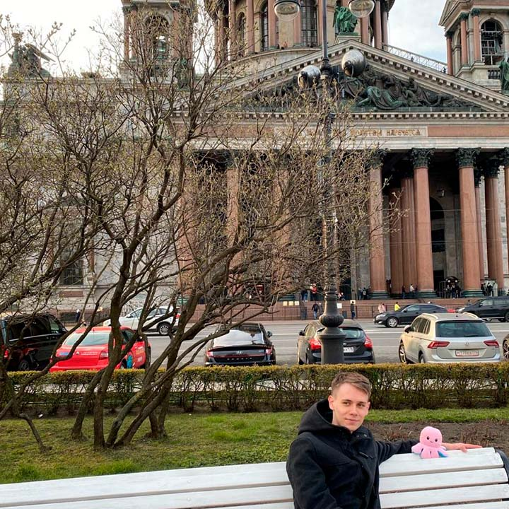

Санкт-ПетербургСанкт-Петербург – русский портовый город на побережье Балтийского моря, который в течение двух веков служил столицей Российской империи. Он был основан в 1703 году Петром I, которому воздвигнут знаменитый памятник "Медный всадник". |
||
|  |
Искаиевский саборИсаа́киевский собо́р — крупнейший православный храм Санкт-Петербурга. Расположен на Исаакиевской площади. Кафедральный собор Санкт-Петербургской епархии с 1858 по 1929 год. С 1928 года имеет статус музея |
|
Московский проспектМоско́вский проспект — магистральная улица в Санкт-Петербурге, четвёртая по протяжённости магистраль города. Соединяет Сенную площадь в центре города с площадью Победы на его южной окраине. По расстоянию между центрами этих площадей длина проспекта составляет 9,3 километра. |